AIDI 2004
AI In Enterprise Applications
Lab 1: Git Version Control in Practice
Git Branching Workflow with Staging and Feature Branches
Student Information
Instructions
- Complete both scenarios and include screenshots for every step.
- Name appears in folder names, commit messages, and GitHub repository names so the work is identifiable.
- Each step follows the commands exactly as shown in the lab.
Scenario 1: Create a Local Repository with Branching Workflow [10 marks]
In this scenario, a project is created from scratch, a branching workflow is set up with main → staging → feature branches, and everything is pushed to GitHub.
Step 1: Create Your Project Folder
mkdir AIDI2004-Lab1-SurenderSunnyDagar
cd AIDI2004-Lab1-SurenderSunnyDagar
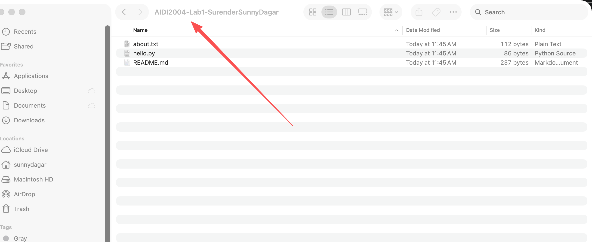
Step 2: Configure Git and Initialize the Repository
git config --global user.name "Surender (Sunny) Dagar"
git config --global user.email "surender.dagar@dcmail.ca"
git config --global init.defaultBranch main
git init
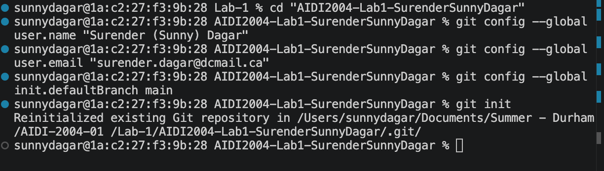
Step 3: Create Initial Project Files
# README.md
# AIDI2004 Lab 1 - Surender (Sunny) Dagar
This is my Git branching workflow lab.
# .gitignore
.DS_Store
__pycache__/
*.pyc
.env
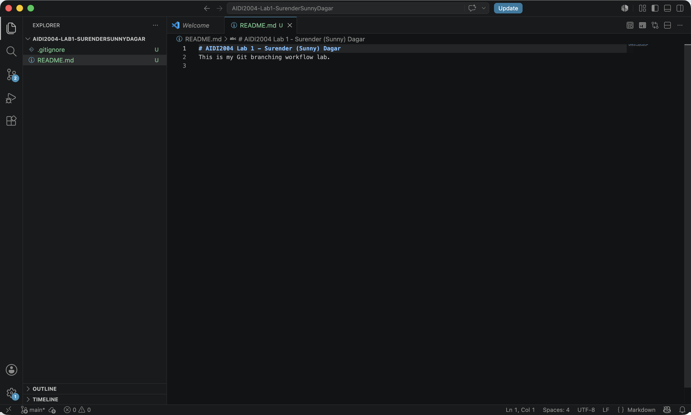
Step 4: Stage and Commit
git add .
git status
git commit -m "Initial commit - Surender (Sunny) Dagar"
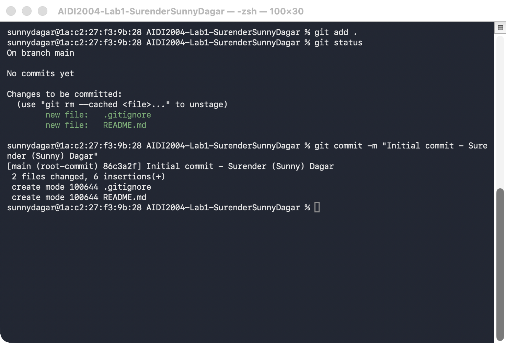
Step 5: Create a GitHub Repository
- Repository name:
AIDI2004-Lab1-SurenderSunnyDagar
- Visibility: Public
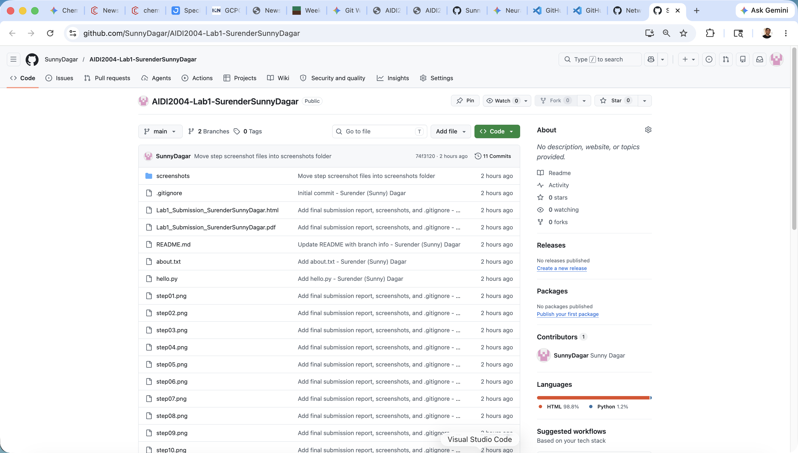
Step 6: Connect and Push to GitHub
git remote add origin https://github.com/SunnyDagar/AIDI2004-Lab1-SurenderSunnyDagar.git
git push -u origin main
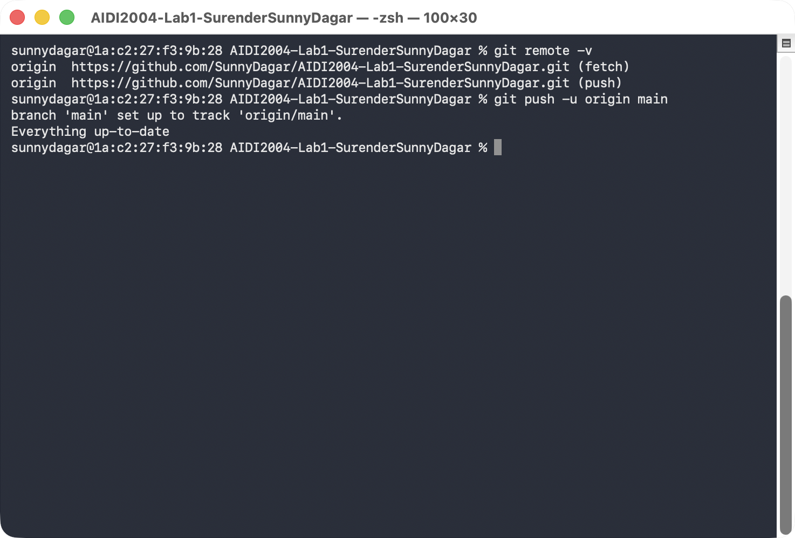
Step 7: Create the Staging Branch
git checkout -b staging
git push -u origin staging
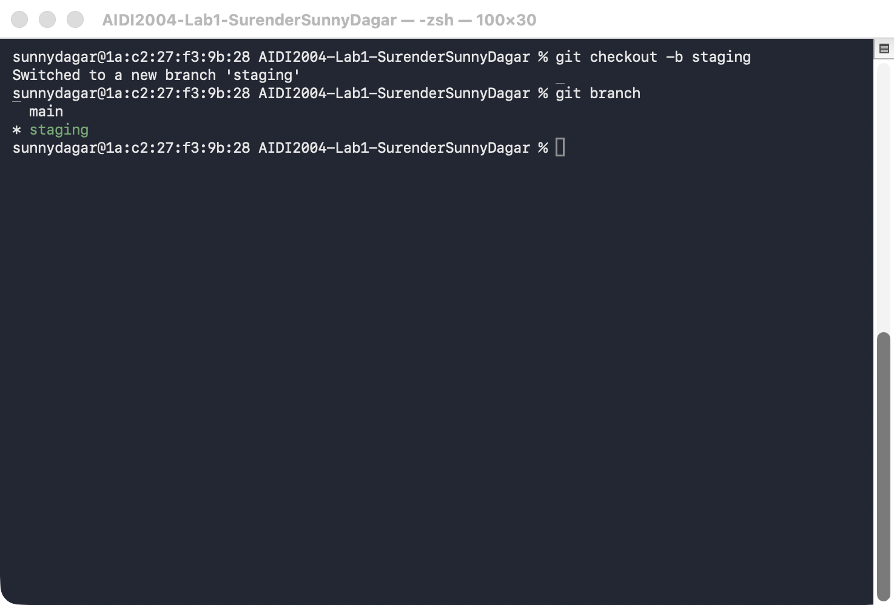
Step 8: Create a Feature Branch and Make Changes
git checkout staging
git checkout -b feature/add-hello-Surender
# hello.py
# hello.py - Created by Surender (Sunny) Dagar
print("Hello from my feature branch!")
git add hello.py
git commit -m "Add hello.py - Surender (Sunny) Dagar"
git push -u origin feature/add-hello-Surender
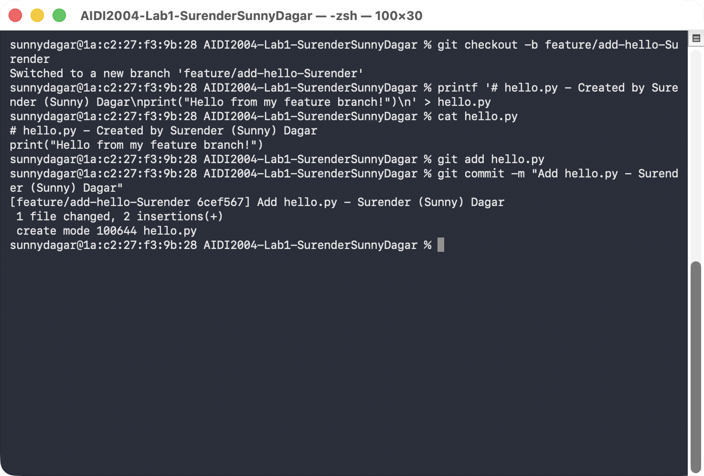
Step 9: Merge Feature into Staging (--no-ff)
git checkout staging
git pull origin staging
git merge --no-ff feature/add-hello-Surender -m "Merge feature/add-hello-Surender into staging"
git push origin staging
Why --no-ff? The --no-ff flag forces Git to create a merge commit even when a fast-forward is possible. This preserves the fact that a feature branch existed and shows the merge point in the network graph.
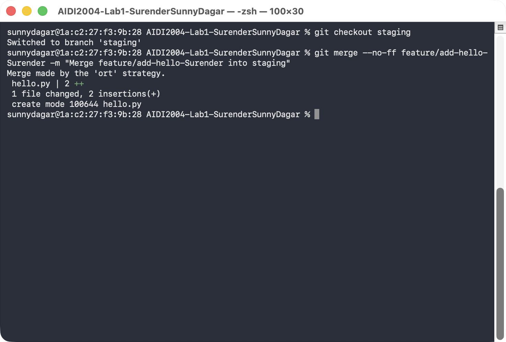
Step 10: Merge Staging into Main (--no-ff)
git checkout main
git pull origin main
git merge --no-ff staging -m "Release: Merge staging into main - Surender (Sunny) Dagar"
git push origin main
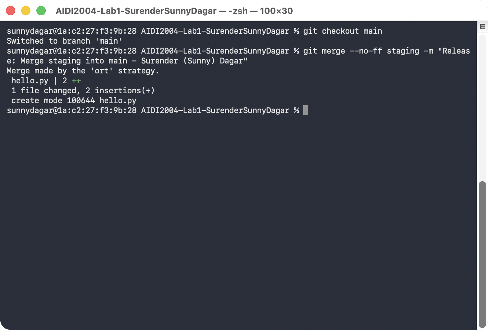
Step 11: Clean Up the Feature Branch
git branch -d feature/add-hello-Surender
git push origin --delete feature/add-hello-Surender
git branch -a
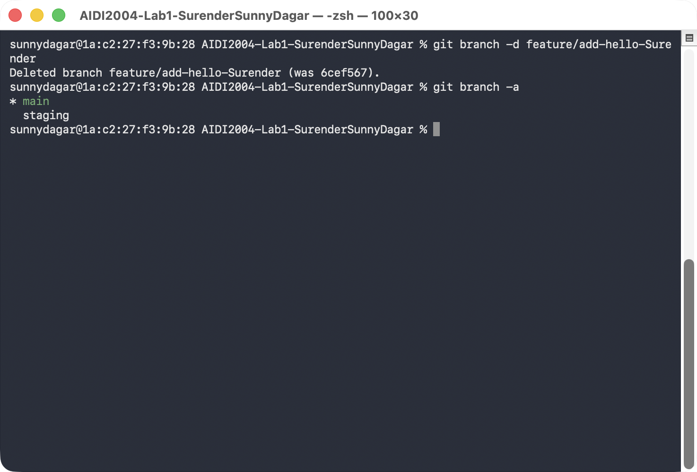
Step 12: View the Network Graph
git log --graph --oneline --all
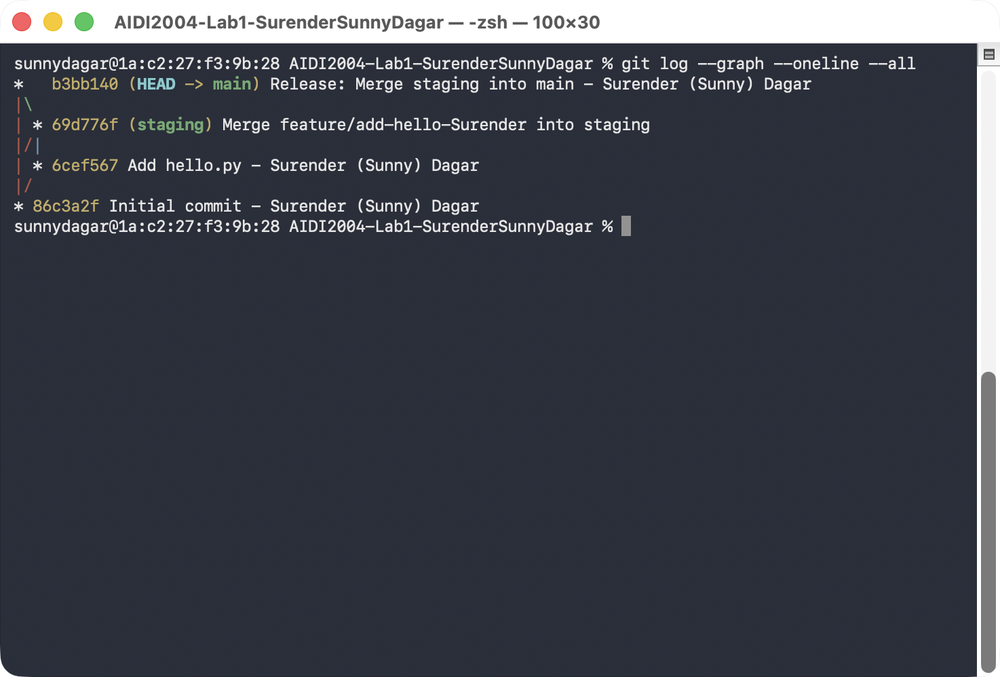
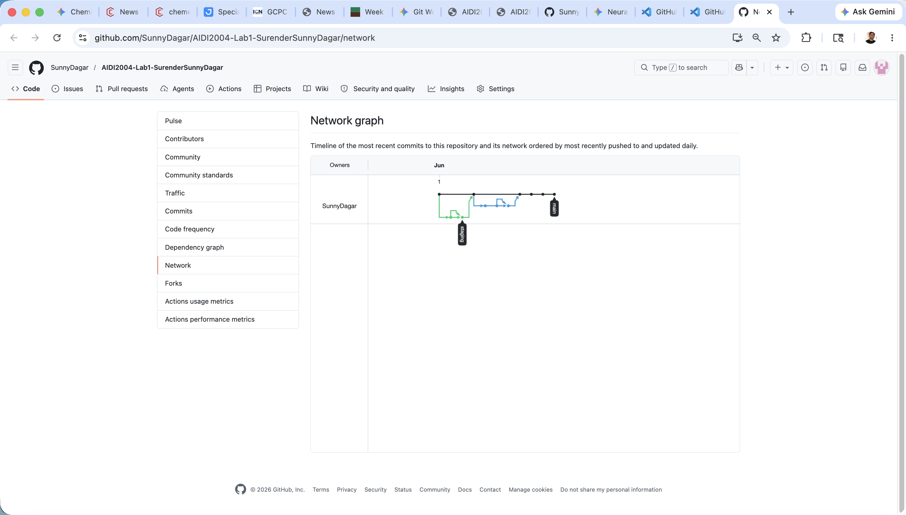
Scenario 2: Clone, Branch, and Merge Workflow [10 marks]
In this scenario, a repository is created on GitHub first, cloned locally, then the full branching workflow is practiced with staging, a feature branch, --no-ff merges, and cleanup.
Step 1: Create a New Repository on GitHub
- Name:
AIDI2004-Lab1-S2-SurenderSunnyDagar
- Visibility: Public, initialized with a README file
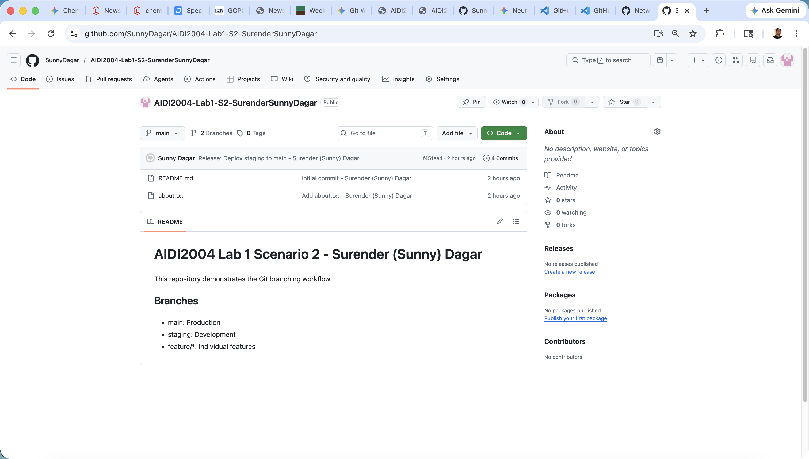
Step 2: Clone the Repository
git clone https://github.com/SunnyDagar/AIDI2004-Lab1-S2-SurenderSunnyDagar.git
cd AIDI2004-Lab1-S2-SurenderSunnyDagar
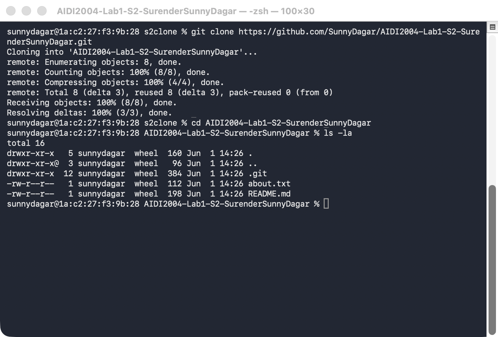
Step 3: Create the Staging Branch
git checkout -b staging
git push -u origin staging
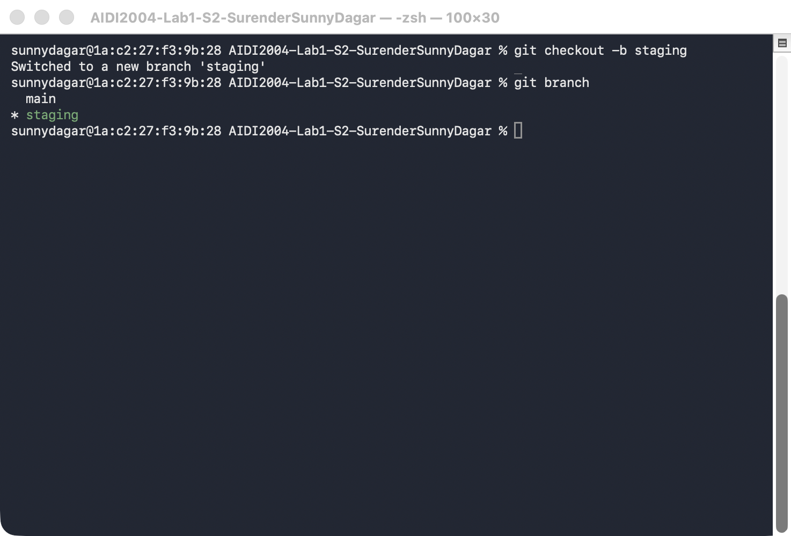
Step 4: Create a Feature Branch and Add Files
git checkout staging
git checkout -b feature/add-about-Surender
# about.txt
Name: Surender (Sunny) Dagar
Course: AIDI 2004 - AI In Enterprise Applications
Lab: Lab 1 - Git Version Control
git add about.txt
git commit -m "Add about.txt - Surender (Sunny) Dagar"
git push -u origin feature/add-about-Surender
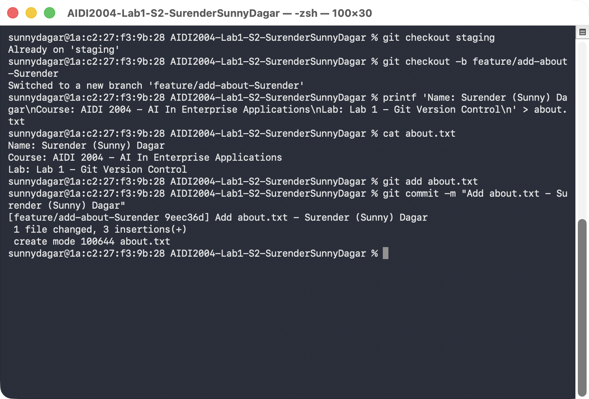
Step 5: Make Additional Changes on the Feature Branch
# README.md
# AIDI2004 Lab 1 Scenario 2 - Surender (Sunny) Dagar
This repository demonstrates the Git branching workflow.
## Branches
- main: Production
- staging: Development
- feature/*: Individual features
git add README.md
git commit -m "Update README with branch info - Surender (Sunny) Dagar"
git push origin feature/add-about-Surender
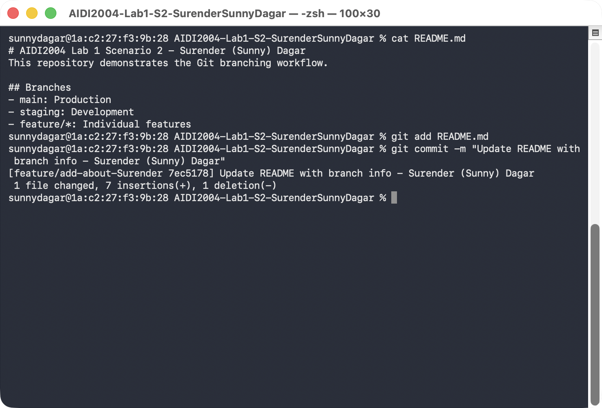
Step 6: Merge Feature into Staging (--no-ff)
git checkout staging
git pull origin staging
git merge --no-ff feature/add-about-Surender -m "Merge feature/add-about-Surender into staging"
git push origin staging
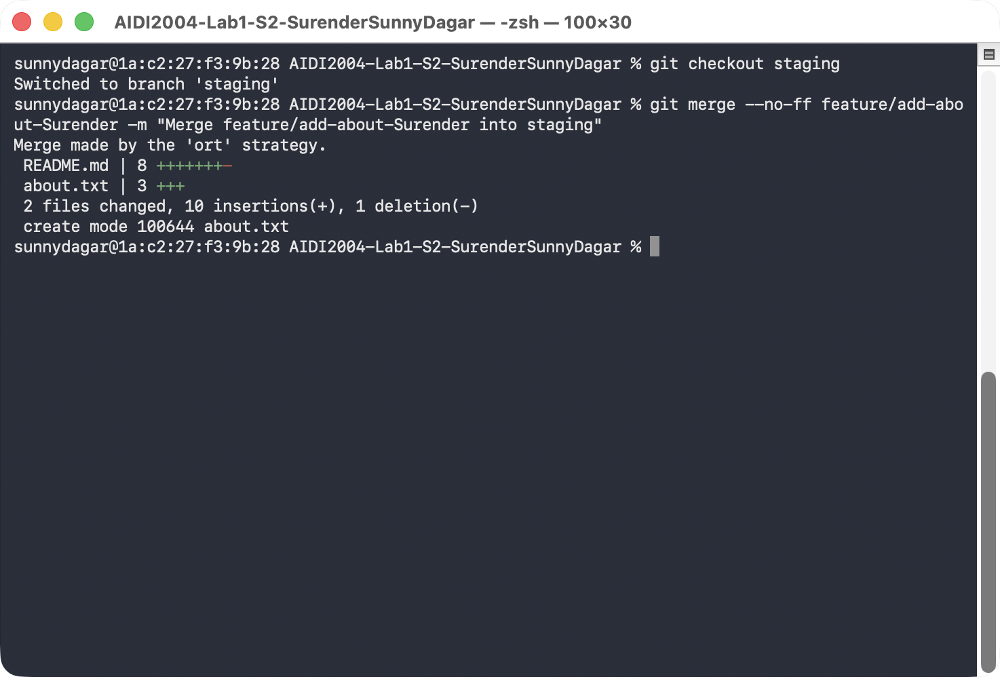
Step 7: Merge Staging into Main (--no-ff)
git checkout main
git pull origin main
git merge --no-ff staging -m "Release: Deploy staging to main - Surender (Sunny) Dagar"
git push origin main
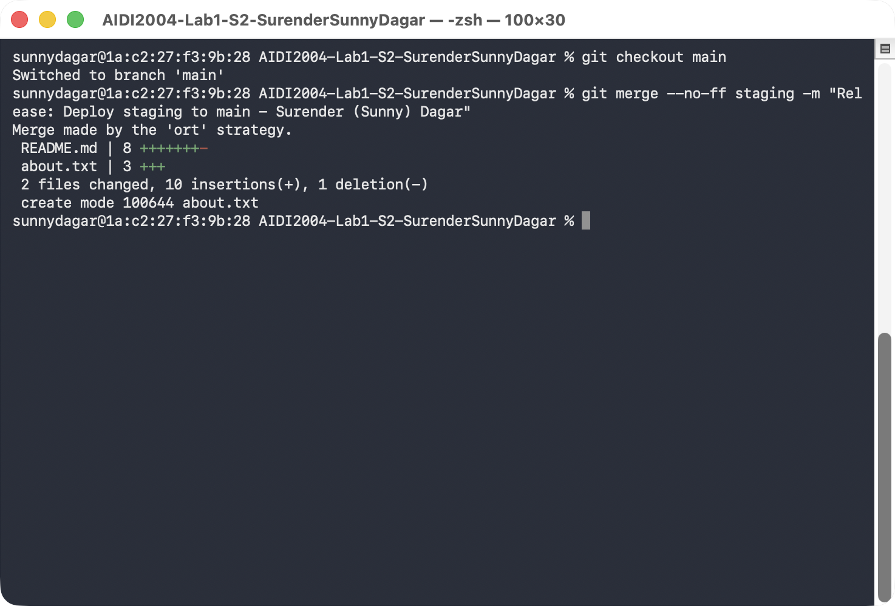
Step 8: Clean Up the Feature Branch
git branch -d feature/add-about-Surender
git push origin --delete feature/add-about-Surender
git branch -a
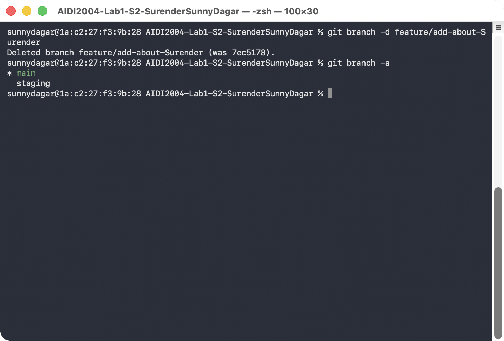
Step 9: View the Network Graph
git log --graph --oneline --all
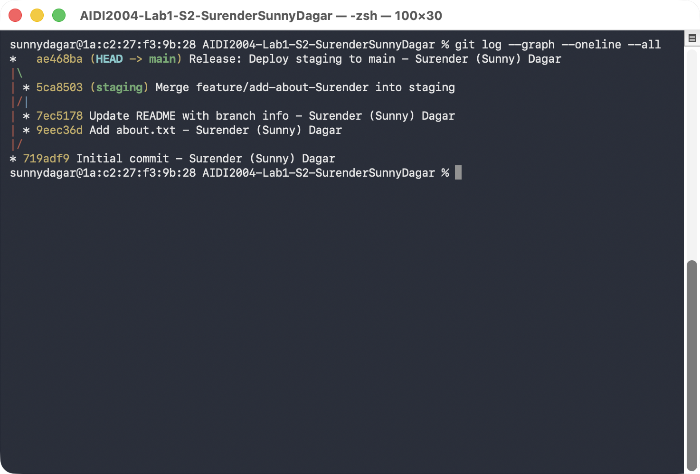
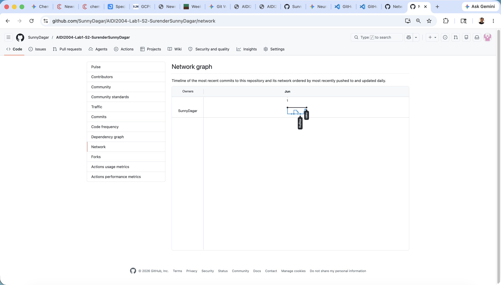
Submission Requirements
- This document is submitted with all screenshot fields filled in.
- Screenshots clearly show the Git commands and their output.
- My name is visible in folder names, commit messages, and repository names.
- Both scenarios are completed.
Marking Scheme
| Task Description | Marks |
|---|
Scenario 1: Local repo, branching, merges (--no-ff), push to GitHub | 5 |
| Scenario 1: Clear and accurate screenshots for all steps | 5 |
Scenario 2: Clone, branching, merges (--no-ff), push changes | 5 |
| Scenario 2: Clear and accurate screenshots for all steps | 5 |
| Total | 20 |